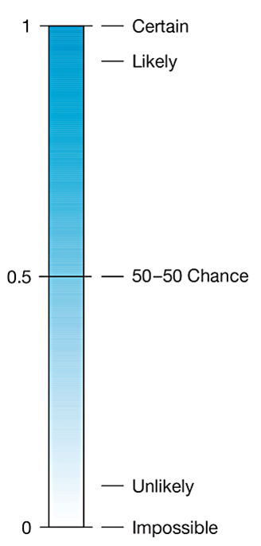
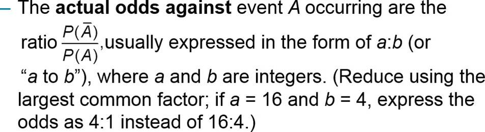
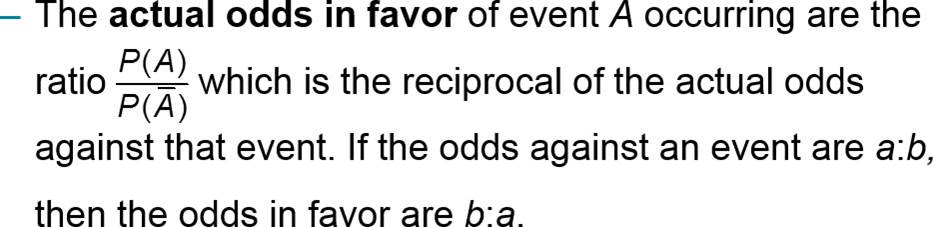
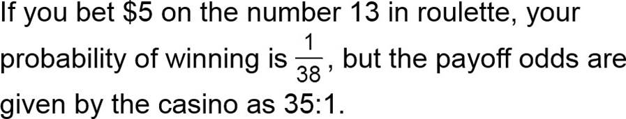
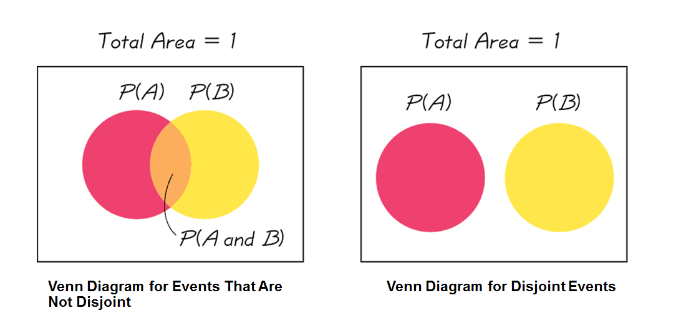
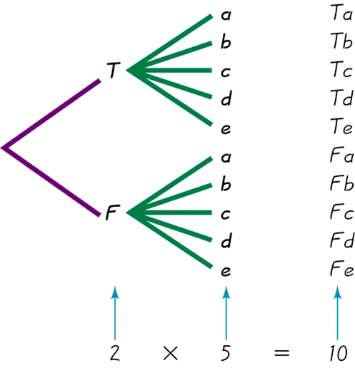
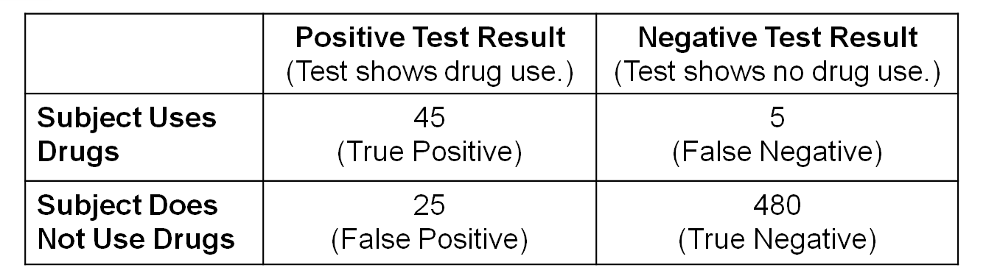

Chapter 4 Probility
4.1 Some History
- Gerolamo Cardano (1501-1576, Italian Mathematician): Games of Chance
- Blaise Pascal and Pierre de Fermat
- Christiaan Huygens (1629-1695, Dutch physicist, mathematician, astronomer and inventor): On Reasoning in Games of Chance
- 18th Century: Jakob I. Bernoulli: The Art of Conjecturing; Abraham de Moivre: The Doctrine of Chance
4.2 Basics of Probability
- Event: Any collection of results or outcomes of a procedure
- Simple Event: an outcome or an event that cannot be further broken down into simpler components
- Sample Space:for a procedure consists of all possible simple events; that is, the sample space consists of all outcomes that cannot be broken down any further
4.3 Example:
| Procedure | Example of Events | Sample Space: Complete List of Simple Events |
|---|---|---|
| Single birth | 1 girl (simple event) | {b, g} |
| 3 births | 2 boys and 1 girl (bbg, bgb, and gbb are all simple events) | {bbb, bbg, bgb, bgg, gbb, gbg, ggb, ggg} |
- Not a Simple Event: With three births, the event of “2 girls and 1 boy” is not a simple event because it can occur with these different simple events: ggb, gbg, bgg.
4.4 Notation for Probabilities
P: denotes a probability.
A, B, and C: denote specific events.
P(A): denotes the probability of event A occurring.
4.5 Probability Limits
- Always express a probability as a fraction or decimal number between 0 and 1.
- The probability of an impossible event is 0.
- The probability of an event that is certain to occur is 1.
- For any event A, the probability of A is between 0 and 1 inclusive. That is, \(0\leq P(A)\leq 1\).
- 
4.6 Three Common Approaches to Finding the Probability of an Event
- Relative Frequency Approximation of Probability Conduct (or observe) a procedure and count the number of times that event A occurs. P(A) is then approximated as follows: \[P(A)=\frac{\textrm{# of times A occurs}}{\textrm{# of times the procedure repeated}}\]
- Classical Approach to Probability (Requires Equally Likely Outcomes) If a procedure has n different simple events that are equally likely, and if event A can occur in s different ways, then \[P(A)=\frac{\textrm{# of times A occurs}}{\textrm{# of different simple events}}\]
- Subjective Probabilities P(A), the probability of event A, is estimated by using knowledge of the relevant circumstances.
- Other Method: Simulations
4.7 Rounding Probabilities
When expressing the value of a probability, either give the exact fraction or decimal or round off final decimal results to three significant digits.
4.8 Law of Large Numbers
- Law of Large Numbers: As a procedure is repeated again and again, the relative frequency probability of an event tends to approach the actual probability.
- The law of large numbers applies to behavior over a large number of trials, and it does not apply to any one individual outcome.
- If we know nothing about the likelihood of different possible outcomes, we should not assume that they are equally likely. The actual probability depends on factors such as the amount of preparation and the difficulty of the test.
4.9 Example
- In a recent year, there were about 3,000,000 skydiving jumps and 21 of them resulted in deaths. Find the probability of dying when making a skydiving jump We use the relative frequency approach as follows: \[P(\textrm{skydiving death})=\frac{\textrm{# of skydiving deaths}}{\textrm{# of skyding jumps}}=\frac{21}{3000000}\approx 0.000007\]
- In a study of U.S. high school drivers, it was found that 3785 texted while driving during the previous 30 days, and 4720 did not text while driving during that same time period (based on data from “Texting While Driving . . . ,” by Olsen, Shults, Eaton, Pediatrics, Vol. 131, No. 6). Based on these results, if a high school driver is randomly selected, find the probability that he or she texted while driving during the previous 30 days.
4.10 Complementary Events
\[\textrm{The complement of event A, denoted by} \bar{A} , \textrm{consists of all outcomes in which the event A does not occur.}\] In a recent year, there were 3,000,000 skydiving jumps and 21 of them resulted in death. Find the probability of not dying when making a skydiving jump.
4.11 Rules of Complementary Events
- \[P(A)+P(\bar{A})=1\]
- \[P(A)=1-P(\bar{A})\]
- \[P(\bar{A})=1-P(A)\]
4.12 Identifying Significant Results with Probabilities
- The Rare Event Rule for Inferential Statistics: If, under a given assumption, the probability of a particular observed event is very small and the observed event occurs significantly less than or significantly greater than what we typically expect with that assumption, we conclude that the assumption is probably not correct.
- Significantly high number of successes: x successes among n trials is a significantly high number of successes if the probability of x or more successes is unlikely with a probability of 0.05 or less. That is, x is a significantly high number of successes if \(P(\textrm{x or more})\leq 0.05\).
- Significantly low number of successes: x successes among n trials is a significantly low number of successes if the probability of x or fewer successes is unlikely with a probability of 0.05 or less. That is, x is a significantly low number of successes if \(P(\textrm{x or fewer}) \leq 0.05\)
4.13 Probability Review
- The probability of an event is a fraction or decimal number between 0 and 1 inclusive.
- The probability of an impossible event is 0.
- The probability of an event that is certain to occur is 1.
- \(P(A) = \textrm{the probability of event A}\)
- \(P(\bar{A})=\textrm{the probability of event A doesn't occur or the complement of event A}\)
4.14 Odds
Actual Odds Against 
Actual Odds in Favor 
Payoff Odds: The payoff odds against event A occurring are the ratio of net profit (if you win) to the amount bet: \[ \textrm{Payoff odds against event A = (net profit):(amount bet)}\]
4.15 Example: Actual Odds Versus Payoff Odds

- Find the actual odds against the outcome of 13.
- How much net profit would you make if you win by betting $5 on 13?
- If the casino was not operating for profit and the payoff odds were changed to match the actual odds against 13, how much would you win if the outcome were 13?
4.16 Super Lotto
- Odds: 1 in 41,416,353
- Jackpot: Minimum $38 million (what is the payoff odds if you won the jackpot?)
4.17 Addition Rule and Multiplication Rule
- Compound Event: A compound event is any event combining two or more simple events.
- Notation for Addition Rule:P(A or B) = P(in a single trial, event A occurs or event B occurs or they both occur) or using math symbols: \[\textrm{P(A or B)}=P(A\cup B)=\textrm{P(A) + P(B) - P(A and B)}\]
4.18 Disjoint Events and the Addition Rule
- Disjoint (or mutually exclusive): Events A and B are disjoint (or mutually exclusive) if they cannot occur at the same time. (That is, disjoint events do not overlap.)

- Example: Event A-Randomly selecting someone for a clinical trial who is a male;
Event B-Randomly selecting someone for a clinical trial who is a female (The selected person cannot be both.) Events that are not disjoint: Event A-Randomly selecting someone taking a statistics course; Event B-Randomly selecting someone who is a female (The selected person can be both.)
4.19 Summary
- To find P(A or B), first associate the word or with addition.
- To find the value of P(A or B), if you the events are not mutually exclusive, you need to subtract the probability of event A and B both occur (P( A and B))
4.20 Rule of Complementary Events
- \[P(A)+P(\bar{A})=1\]
- \[P(A)=1-P(\bar{A})\]
- \[P(\bar{A})=1-P(A)\]
4.21 Example
- Based on a journal article, the probability of randomly selecting someone who has sleepwalked is 0.292, so P(sleepwalked) = 0.292 (based on data from “Prevalence and Comorbidity of Nocturnal Wandering in the U.S. General Population,” by Ohayon et al., Neurology, Vol. 78, No. 20). If a person is randomly selected, find the probability of getting someone who has not sleepwalked.
- Musical styles other than rock and pop are becoming more popular. A survey of college students finds that the probability they like country music is .40. The probability that they liked jazz is .30 and that they liked both is .10. What is the probability that they like country or jazz?
4.22 Multiplication Rule
- P(A and B) = P(event A occurs in a first trial and event B occurs in a second trial)
- P(B | A) represents the probability of event B occurring after it is assumed that event A has already occurred. This is also called conditional probability.
- To find the probability that event A occurs in one trial and event B occurs in another trial, multiply the probability of event A by the probability of event B, but be sure that the probability of event B is found by assuming that event A has already occurred.
- \[\textrm{If two events A & B are dependent}, P(\textrm{A and B})=P(A \cap B)=P(A)\cdot P(B|A)\]
- \[\textrm{If two events A & B are independent}, P(\textrm{A and B})=P(A \cap B)=P(A)\cdot P(B) \]
4.23 Independence and the Multiplication Rule
- Two events A and B are independent if the occurrence of one does not affect the probability of the occurrence of the other. (Several events are independent if the occurrence of any does not affect the probabilities of the occurrence of the others.) If A and B are not independent, they are said to be dependent.
- A certain brand of light bulbs are defective five percent of the time. You randomly pick a package of two such bulbs off the shelf of a store. What is the probability that both bulbs are defective? Can you assume they are independent?
- There are seven girls and eight boys in a math class. The teacher selects two students at random to answer questions on the board. What is the probability that both students are girls? Are these events independent?
- Suppose 50 drug test results are given from people who use drugs:
- If 2 of these 50 subjects are randomly selected with replacement, find the probability the first selected person had a positive test result and the second selected person had a negative test result.
- Repeat part (a) by assuming that the two subjects are selected without replacement.
| Positive Test Results | 44 |
|---|---|
| Negative Test Results | 6 |
| Total Test Results | 50 |
- When two different people are randomly selected from those in your class, find the indicated probability by assuming birthdays occur on the same day of the week with equal frequencies.
- Probability that two people are born on the same day of the week.
- Probability that two people are both born on Monday.
4.24 Sampling
In the world of statistics, sampling methods are critically important, and the following relationships hold: - Sampling with replacement: Selections are independent events. - Sampling without replacement: Selections are dependent events. - When sampling without replacement and the sample size is no more than 5% of the size of the population, treat the selections as being independent (even though they are actually dependent). - Assume that three adults are randomly selected without replacement from the 247,436,830 adults in the United States. Also assume that 10% of adults in the United States use drugs. Find the probability that the three selected adults all use drugs.
4.25 Redundancy: Important Application of the Multiplication Rule
- The principle of redundancy is used to increase the reliability of many systems. Our eyes have passive redundancy in the sense that if one of them fails, we continue to see. An important finding of modern biology is that genes in an organism can often work in place of each other. Engineers often design redundant components so that the whole system will not fail because of the failure of a single component
- Modern aircraft are now highly reliable, and one design feature contributing to that reliability is the use of redundancy, whereby critical components are duplicated so that if one fails, the other will work. For example, the Airbus 310 twin-engine airliner has three independent hydraulic systems, so if any one system fails, full flight control is maintained with another functioning system.
- we will assume that for a typical flight, the probability of a hydraulic system failure is 0.002. If the Airbus 310 were to have one hydraulic system, what is the probability that the aircraft’s flight control would work for a flight?
- Given that the Airbus 310 actually has three independent hydraulic systems, what is the probability that on a typical flight, control can be maintained with a working hydraulic system?
4.26 Combining the addition and multiplication rules & Tree Diagrams
- The tree diagram summarizes the possible outcomes for a true/false question followed by a multiple choice question. Note that there are 10 possible combinations. 
- A certain brand of light bulbs are defective five percent of the time. You randomly pick a package of two such bulbs off the shelf of a store. What is the probability that exactly one bulb is defective?
- Box 1 contains 2 red balls and 1 blue ball. Box 2 contains 3 blue balls and 1 red ball. A coin is tossed. If it falls heads up, box 1 is selected and a ball is drawn. If it falls tails up, box 2 is selected and a ball is drawn. Find the probability of selecting a red ball.
4.27 More Examples
- An urn contains 3 red marbles, 4 blue marbles and 6 green marbles. A marble is selected and its color noted. Then it is replaced. A second
marble is selected and its color noted. Find the probability of
- Selecting 2 red marbles
- Selecting 1 red marble and then 1 blue marble
- Selecting 1 blue marble then 1 green marble
- Draw three cards from a deck of cards and not replaced. Find the probability of these events:
- Getting 3 jacks
- Getting an ace, a King, and a queen in order
- getting a club, a spade and a heart in order.
4.28 Summary of Addition Rule and Multiplication Rule
- Addition Rule for P(A or B): The word or suggests addition, and when adding P(A) and P(B), we must add in such a way that every outcome is counted only once.
- Multiplication Rule for P(A and B): The word and for two trials suggests multiplication, and when multiplying P(A) and P(B), we must be sure that the probability of event B takes into account the previous occurrence of event A.
4.29 Complements and Conditional Probability
- When finding the probability of some event occurring “at least once,” we should understand the following:
- “At least one” has the same meaning as “one or more.”
- The complement of getting “at least one” particular event is that you get no occurrences of that event.
4.30 The Probability of “At Least One”
- The probability that at least one outcome happens is 1 minus the probability that no outcomes happen.
- P(at least 1) = 1 - P(none)
- A certain brand of light bulbs are defective five percent of the time. You randomly pick a package of two such bulbs off the shelf of a store. What is the probability that at least one bulb is defective?
- A study by SquareTrade found that 6% of damaged iPads were damaged by “bags/backpacks.” If 20 damaged iPads are randomly selected, find the probability of getting at least one that was damaged in a bag/backpack. Is the probability high enough so that we can be reasonably sure of getting at least one iPad damaged in a bag/backpack?
- For a sales promotion the manufacturer places winning symbols under the caps of 10% of all Dr. Pepper bottles. You buy a six-pack. What is the probability that you win something?
4.31 Conditional Probability
- A conditional probability of an event is a probability obtained with the additional information that some other event has already occurred.
- P(A | B) denotes the conditional probability of event A occurring, given that event B has already occurred.
- \[P(A|B)=\frac{P(A\cap B)}{P(B)}\]
4.32 Example:

- If one test subject is randomly selected, find the probability that the subject had a positive test result, given that the subject actually uses drugs. That is, find P(positive test result | subject uses drugs).
- If one test subjects is randomly selected, find the probability that the subject actually uses drugs, given that he or she had a positive test result. That is, find P(subject uses drugs | positive test result).
- A recent survey asked 100 people if they thought women in the armed forces should be permitted to participate in combat. The results of the survey are shown
- Find the probability of the respondent answered yes, given that the respondent was a female
- Find the probability of the respondent was a male, given that the respondent answered no.
| Gender | Yes | No | Total |
|---|---|---|---|
| Male | 32 | 18 | 50 |
| Female | 8 | 42 | 50 |
| Total | 40 | 60 | 100 |
- In a recent study it was found that the probability that a randomly selected student is a girl is .51 and is a girl and plays sports is .10. If the student is female, what is the probability that she plays sports?
- The probability that Sam parks in a no-parking zone and gets a parking ticket is 0.06, and the probability that Sam cannot find a legal parking space and has to park in the non-parking zone is 0.2. Find the probability that he will get a parking ticket given that he parks in the no-parking zone.
4.33 More Examples About Drug Testing
- Suppose that 16% of the high school athletes in a large school district have taken a banned substance. The drug test used by this district has a false positive rate of 5% and a false negative rate of 10%. Use what you have learned in this chapter to help answer the following questions about the district’s drug-testing program. Show your method clearly.
- What’s the probability that a randomly chosen athlete tests positive for banned substances?
- If two athletes are randomly selected, what’s the probability that at least one of them tests positive?
- If a randomly chosen athlete tests positive, what’s the probability that the student did not take a banned substance? Based on your answer, do you think that an athlete who tests positive should be suspended from athletic competition for a year? Why or why not?
- If a randomly chosen athlete tests negative, what’s the probability that the student took a banned substance? Explain why it makes sense for the drug-testing process to be designed so that this probability is less than the one you found in Question 3.
- The district decides to immediately retest any athlete who tests positive. Assume that the results of an athlete’s two tests are independent. Find the probability that a student who gets a positive result on both tests actually took a banned substance. Based on your answer, do you think that an athlete who tests positive twice should be suspended from athletic competition for a year? Why or why not?
4.34 Two-Way Table
| Student | Staff | Total | |
|---|---|---|---|
| American | 107 | 105 | 212 |
| European | 33 | 12 | 45 |
| Asian | 55 | 47 | 102 |
| Total | 195 | 164 | 359 |
- What is the probability that the driver is a student?
- What is the probability that the driver drives a European car?
- What is the probability that the driver is staff and drives an Asian car?
- What is the probability that the driver drives an American or Asian car?
- What is the probability that the driver is staff or drives an Asian car?
- If the driver is a student, what is the probability that they drive an American car?
- What is the probability that the driver is a student if the driver drives a European car?
4.35 Counting
- Multiplication Counting Rule: For a sequence of events in which the first event can occur \(n_1\) ways, the second event can occur \(n_2\) ways, the third event can occur \(n_3\) ways, and so on, the total number of outcomes is \(n_1\) ? \(n_2\) ? \(n_3\) . . . .
- When making random guesses for an unknown four-digit passcode, each digit can be 0, 1. . . , 9. What is the total number of different possible passcodes? Given that all of the guesses have the same chance of being correct, what is the probability of guessing the correct passcode on the first attempt?
- Factorial Rule: The number of different arrangements (order matters) of n different items when all n of them are selected is n!.
- A statistics researcher must personally visit the presidents of the Gallup, Nielsen, Harris, Pew, and Zogby polling companies.
- How many different travel itineraries are possible?
- If the itinerary is randomly selected, what is the probability that the presidents are visited in order from youngest to oldest?
4.36 Permutations: Order Matters
- Permutations of items are arrangements in which different sequences of the same items are counted separately. (The letter arrangements of abc, acb, bac, bca, cab, and cba are all counted separately as six different permutations.)
- Permutations Rule When n different items are available and r of them are selected without replacement, the number of different permutations (order counts) is given by \[_{n}P_{r}=\frac{n!}{(n-r)!}\]
- In a horse race, a trifecta bet is won by correctly selecting the horses that finish first and second and third, and you must select them in the correct order. The 140th running of the Kentucky Derby had a field of 19 horses.
- How many different trifecta bets are possible?
- An experimental psychologist uses a sequence of two food rewards in an experiment regarding animal behavior. These two rewards are of three different varieties. How many different sequences of rewards are there if each variety can be used only once in each sequence?
- Permutations Rule (When Some Items Are Identical to Others): The number of different permutations (order counts) when n items are available and all n of them are selected without replacement, but some of the items are identical to others, is found as follows: \[\frac{n!}{n_{1}!n_{2}!\cdots n_{k}!}\]
Where \(n_1\) are alike, \(n_2\) are alike, . . . , and \(n_k\) are alike.
- How many total arrangements of the letters in MISSISSIPPI are there?
4.37 Combinations: Order Doesn’t Matter
When n different items are available, but only r of them are selected without replacement, the number of different combinations (order does not matter) is found as follows: \[_{n}C_{r}=\frac{n!}{(n-r)!r!}\]
- In California’s Fantasy 5 lottery game, winning the jackpot requires that you select 5 different numbers from 1 to 39, and the same 5 numbers must be drawn in the lottery. The winning numbers can be drawn in any order, so order does not make a difference.
- How many different lottery tickets are possible?
- Find the probability of winning the jackpot when one ticket is purchased.
- Super Lotto
- How to Play: Choose 5 numbers 1-47 and 1 number 1-27
- Odds: 1 in 41,416,353 (how do we get this number?)
Suppose there are 15 girls and 18 boys in a class. In how many ways can 2 girls and 2 boys be selected for a group project?